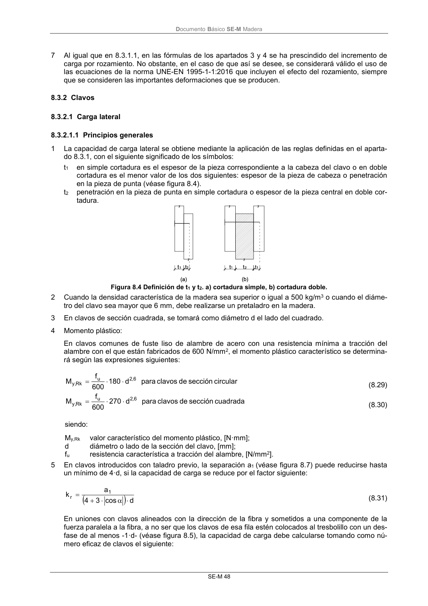

DB-SE-M Madera · edición 2019-12-20 · capa oficial
Documento DB-SE-M-oficial · SHA-256 del PDF 26b5819839ebfda78b0b119c5e76a0a37773b0d763c05688541870075df93718
Copia fiel del PDF fuente · Fuente oficial
Ficha de la disposición en la fuente oficial
Formatos: JSON del segmento · Markdown
8.3.2.1.1 Principios generales 1 La capacidad de carga lateral se obtiene mediante la aplicación de las reglas definidas en el aparta- do 8.3.1, con el siguiente significado de los símbolos: t1 en simple cortadura es el espesor de la pieza correspondiente a la cabeza del clavo o en doble cortadura es el menor valor de los dos siguientes: espesor de la pieza de cabeza o penetración en la pieza de punta (véase figura 8.4). t2 penetración en la pieza de punta en simple cortadura o espesor de la pieza central en doble cor- tadura. Figura 8.4 Definición de t1 y t2. a) cortadura simple, b) cortadura doble. 2 Cuando la densidad característica de la madera sea superior o igual a 500 kg/m3 o cuando el diáme- tro del clavo sea mayor que 6 mm, debe realizarse un pretaladro en la madera. 3 En clavos de sección cuadrada, se tomará como diámetro d el lado del cuadrado. 4 Momento plástico: En clavos comunes de fuste liso de alambre de acero con una resistencia mínima a tracción del alambre con el que están fabricados de 600 N/mm2, el momento plástico característico se determina- rá según las expresiones siguientes: circular
